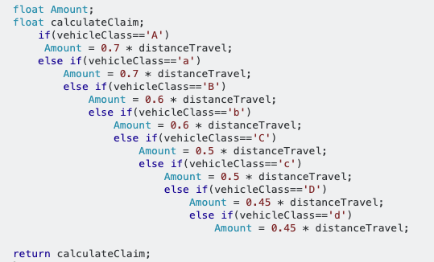

SEMINAR 01 지시하기
AI를 통한 자동화, 정말 새로운 걸까?
AI가 없던 시절에도 사람들은 일을 자동화해 왔다.
어떻게?

AI가 없던 시절에도 사람들은 일을 자동화해 왔다.
어떻게?

김홍도, 「타작」


규칙을 사람이 전부 적는다.

예시를 잔뜩 보여 주고 스스로 배우게 한다.
사람이 쓰는 말로 시킨다.
바로 떠오르는 대로 쓴다
여러 단계를 따져 보고 쓴다
ChatGPT는 즉시와 생각 단계를, Claude는 노력 수준과 사고 설정을, Gemini는 Flash와 Pro 같은 모델을 골라 생각의 깊이를 정한다. 알아서 바꿔 주는지는 요금제마다 다르다.
친절하게 답한다.
모르면 모른다고 한다.
위험한 요청은 거절한다.
회의 목적을 먼저 정하고, 안건을 미리 나누고, 끝날 때 할 일을 정리하세요.
일반적인 질문은 이미 잘한다. 문제는 우리 회사 일이다.
머릿속 기준을 글로 꺼내야 AI가 쓸 수 있다.
“당신은 마케팅 전문가입니다” 같은 역할 한 줄은 말투를 맞출 뿐, 정확도를 올리지는 않는다.
회의에서는 런칭 일정과 마케팅 방향에 대해 다양한 의견이 오갔습니다. 여러 사항을 논의했고 추후 다시 검토하기로 했습니다.
첨부한 킥오프 회의 전사본을 팀 공유용으로 요약해줘.
양식: 결정 사항, 담당자와 기한, 남은 쟁점. 전사본에 없는 내용은 쓰지 마.
결정 사항 출시일 10월 15일, 첫 판매 채널은 소상공인 박람회
담당자와 기한 카피 초안 김대리 10월 2일, 제품 사진 촬영 박과장 10월 6일
남은 쟁점 단말기 무상 대여 이벤트 여부는 다음 회의에서 결정
혁신적인 새 제품을 지금 만나 보세요! 당신의 일상을 바꿀 최고의 선택.
포켓페이 P1 출시 안내 문구 3개 써줘.
제품: 주머니에 들어가는 휴대형 결제 단말기. 고객: 카페, 식당, 푸드트럭 사장님. 채널: 인스타그램.
친근한 존댓말, 30자 이내. “최고”, “최초”, 근거 없는 “수수료 0원”은 쓰지 마.
이런 느낌으로: “줄 선 손님 앞에서, 결제는 주머니에서” “테이블까지 찾아가는 결제”
국내 휴대형 결제 단말기 시장은 약 4,800억 원 규모입니다(출처: 한국결제산업연구원, 2025).
| 항목 | 계산 | 값 |
|---|---|---|
| 대상 사업장 수 | 카페, 식당, 푸드트럭 수 | 사람이 채움 |
| 단말기 교체 주기 | 업계 자료 | 사람이 채움 |
| 평균 가격 | 주요 제품 가격 평균 | 사람이 채움 |
| 연 시장 규모 | 사업장 수 ÷ 교체 주기 × 가격 | 자동 계산 |
시작하기 전에 세 가지만 여쭤볼게요.
그럼 판매 채널을 중심으로 한 장짜리 보고서를 쓰겠습니다.
정말 훌륭해요! 고칠 곳이 거의 없습니다.
30자 이내 통과, 24자
장점이 하나로 보이는가 보완, 장점이 세 개라 흩어짐
금지 표현 보완, “최고”는 근거가 필요함
가맹점 대표 연락처, 주민번호
발표 전 매출, 판매 대수
대리점, 제휴사 계약서
회사가 허용한 AI 도구인지 먼저 확인한다.
매번 설명하기 지친다면? 다음 편에서 돌쇠에게 업무 수첩과 열쇠를 건넨다.
기준일 2026-09-30. 출처는 발표자 노트에 있습니다.